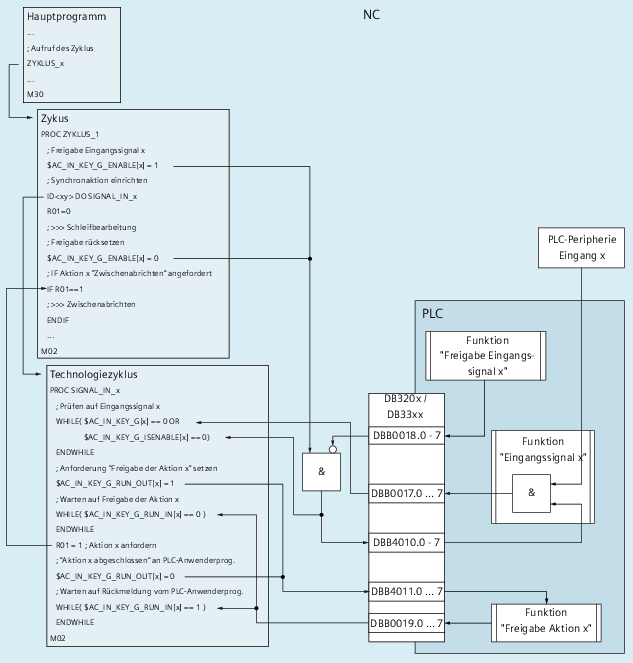

In der Technologie Schleifen müssen asynchron zum Bearbeitungsvorgangs Eingangssignale erkannt und die entsprechenden Aktionen in den Programmablauf integriert werden. Dazu stehen folgende Systemvariablen und NC/PLC-Nahtstellensignale zur Verfügung:
Systemvariable | NC/PLC-Nahtstelle DB21, ... | Beschreibung |
|---|---|---|
Kommunikation NC-intern | ||
$AC_IN_KEY_G_ENABLE[1 ... 8] 1 | --- | NC-seitige Freigabe des Eingangssignals |
Kommunikation NC → PLC 2) | ||
$AC_IN_KEY_G_ISENABLE[1 ... 8] 1) | <Chan>.grinding.in.signalEnabled | Freigabe des Eingangssignals |
$AC_IN_KEY_G_RUN_OUT[1 ... 8] | <Chan>.grinding.in.requested | NC-seitige Freigabeanforderung der Aktion (optional) |
Kommunikation PLC → NC 3) | ||
$AC_IN_KEY_G[1 ... 8] | <Chan>.grinding.out.set | Eingangssignal |
--- | <Chan>.grinding.out.disableSignal 1) | PLC-seitige Sperre des Eingangssignals |
$AC_IN_KEY_G_RUN_IN[1 ... 8] | <Chan>.grinding.out.ackFuncExecution | PLC-seitige Freigabe der Aktion (optional) |
1) Durch die NC-seitige UND-Verknüpfung des NC-Freigabesignals in $AC_IN_KEY_G_ENABLE und des PLC-Freigabesignals NOT( 2) Der Inhalt der Systemvariable wird in die NC/PLC-Nahtstelle übertragen 3) Der Inhalt der NC/PLC-Nahtstelle wird in die Systemvariable übertragen | ||
Von einem Hauptprogramm wird ein Zyklus (ZYKLUS_1) gestartet, in dem sowohl die Schleifbearbeitung als auch das Zwischenabrichten durchgeführt werden.
Die Aktion "Zwischenabrichten" kann asynchron zur Bearbeitung von einem Bediener über ein Eingangssignal der PLC-Peripherie angefordert werden.
Das Erkennen des Eingangssignals und das Anfordern der Aktion erfolgt in einem Technologiezyklus. Der Technologiezyklus ("SIGNAL_IN_x") wird im Aktionsteil der im Zyklus eingerichteten Synchronaktion (ID <xy>) aufgerufen.
Im nachfolgenden Bild ist das Aufrufschema, die relevanten Befehle und der Signalfluss dargestellt.
① | <Chan>.grinding.out.disableSignal |
② | <Chan>.grinding.out.set |
③ | <Chan>.grinding.in.signalEnabled |
④ | <Chan>.grinding.in.requested |
⑤ | <Chan>.grinding.out.ackFuncExecution |
Die PLC-seitigen Funktionen wie z.B. "Freigabe Eingangssignal x" müssen vom PLC-Anwenderprogramm bereitgestellt werden.
Hauptprogramm
Aufruf des Zyklus "ZYKLUS_1"
Zyklus "ZYKLUS_1"
Setzen der Freigabe des Eingangssignals x ($AC_IN_KEY_G_ENABLE)
Einrichten der Synchronaktion mit Technologiezyklus "SIGNAL_IN_x"
Initialisieren des Triggers für Aktion x "Zwischenabrichten" (R01)
Schleifbearbeitung durchführen
Technologiezyklus "SIGNAL_IN_x" (parallel zum Zyklus)
Erkennen des Eingangssignals ($AC_IN_KEY_G) bei aktiver Freigabe ($AC_IN_KEY_G_ISENABLE)
Anfordern der Freigabe der Aktion x von PLC ($AC_IN_KEY_G_RUN_OUT)
Warten auf Freigabe der Aktion x von PLC ($AC_IN_KEY_G_RUN_IN)
Anfordern der Aktion x im Zyklus (R01)
Rückmelden der Anforderung an PLC ($AC_IN_KEY_G_RUN_OUT)
Warten auf Quittierung von PLC ($AC_IN_KEY_G_RUN_IN)
Zyklus "ZYKLUS_1" (nach Abschluss der Schleifbearbeitung)
Rücksetzen der Freigabe des Eingangssignals x ($AC_IN_KEY_G_ENABLE)
Falls Aktion x angefordert ist ⇒ Zwischenabrichten durchführen
... (eventuell den Ablauf Schleifbearbeitung / Zwischenabrichten wiederholt durchführen etc.)
PLC-Anwenderprogramm
Funktion "Freigabe Eingangssignal x":
Setzen des Nahtstellensignals <Chan>.grinding.out.disableSignal
Funktion "Eingangssignal x":
Verknüpfen (UND) des Eingangssignals der PLC-Peripherie und der Freigabe des Eingangssignals (<Chan>.grinding.in.signalEnabled) und Setzen des Ergebnisses in der Nahtstelle (<Chan>.grinding.out.set)
Funktion "Freigabe Aktion x":
Prüfen/Setzen der Nahtstellensignale <Chan>.grinding.in.requested / <Chan>.grinding.out.ackFuncExecution
Basic Program Plus | Basic Program | |
|---|---|---|
<Chan>.grinding.in.signalEnabled | LBP_Chan*.E_InKeyGIsEn1-8 | DB21, ... .DBX390.0..7 |
<Chan>.grinding.in.requested | LBP_AxisX*.E_InKeyGRunOut1-8 | DB21, ... .DBX391.0..7 |
<Chan>.grinding.out.set | LBP_Chan*.A_InKeyG<n> | DB21, ... .DBX385.0..7 |
<Chan>.grinding.out.disableSignal | LBP_Chan*.A_InKeyGEn<n> | DB21, ... .DBX386.0..7 |
<Chan>.grinding.out.ackFuncExecution | LBP_Chan*.A_InKeyGRunIn<n> | DB21, ... .DBX387.0..7 |